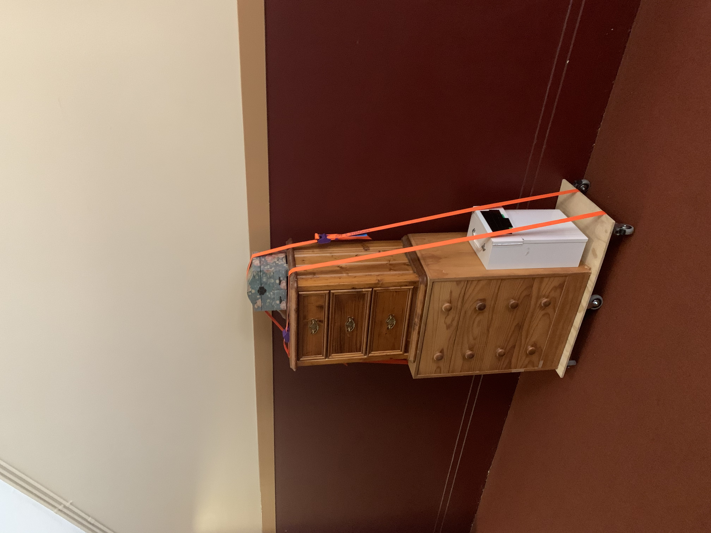

place in me what needs to be shared,
take from me what needs to be used,
document in me what i have lost and gained
(please and thank you)
2020
This work, produced collaboratively with comrades Lukas Kalos, and Veronica Bull is an art-library-archive-sculpture produced for installation in the new Sydney College of the Arts. The title of the work, is the instructions for how the work is meant to be activated by the students in the building as they can take and place objects in the sculpture. The work is site specific in that it is activated by the ongoing interactions that students may have with it and document in the ledger book. As well as this, the work is largely constructed out of recycled objects such as drawers, and cabinets to both suggest the use of the work and make it ecologically sensitive.
